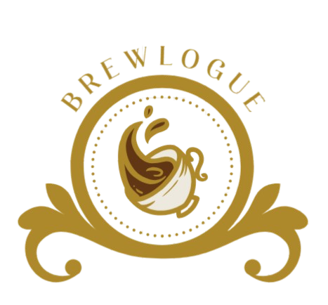
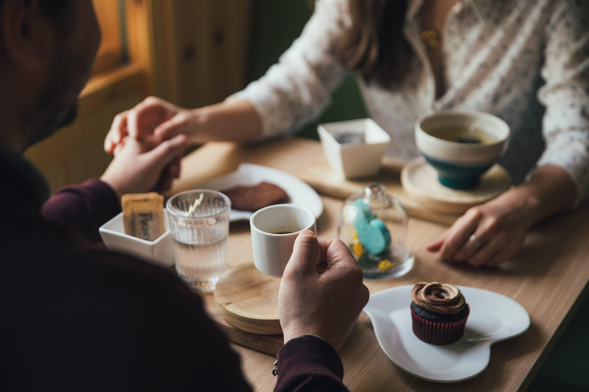

TYPES OF COFFEE
Espresso, Americano, Latte, Cappuccino, Macchiato, Mocha, Flat White, Ristretto, Cortado, and Affogato.



Enjoy Brewlogue’s exclusive coffee offer! Savor rich, aromatic brews with a special discount today.
Espresso, Americano, Latte, Cappuccino, Macchiato, Mocha, Flat White, Ristretto, Cortado, and Affogato.
Discover coffee beans and flavours for your favourite cup, from smooth and mellow to bold and rich.
Pair your coffee with croissants, muffins, scones, biscotti, macarons, and fresh pastries.
Freshly brewed coffee, crafted fast — your perfect cup to go.
The Coffee Herald brings stories, craft, and creativity together in every cup.
Explore the little details that turn freshly ground beans and hot water into a memorable cup of coffee.
READ MORE
A classic brewing method that brings out a full-bodied flavour and a rich, satisfying aroma.
READ MORE
Discover the tradition of finely ground coffee brewed slowly for a distinctive, bold taste.
READ MORE
Explore a world of beans, blends, aromas, and flavour profiles.
Careful tasting and brewing help us celebrate a better cup.
Coffee culture connects growers, roasters, cafés, and coffee lovers.
Discover roasters and coffee makers from around the world.